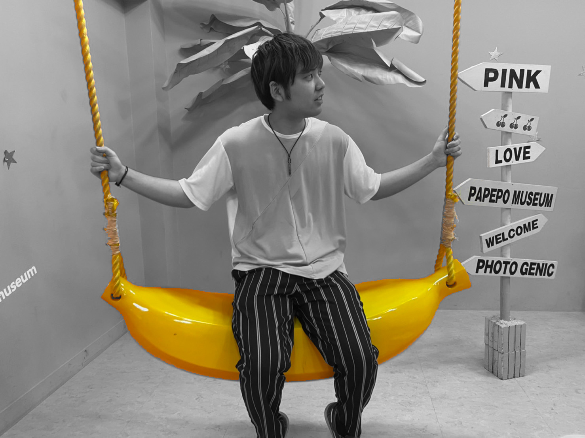

<!DOCTYPE html>
<html lang="ja">

<head>

  <meta charset="UTF-8">

  <title>ポートフォリオ</title>

  <link rel="stylesheet" href="css/style.css">

  <!-- GoogleのCDN -->
  <script src="https://ajax.googleapis.com/ajax/libs/jquery/3.5.1/jquery.min.js"></script>

  <script src="js/jquery.arctext.js" type="text/javascript"></script>

  <link rel="preconnect" href="https://fonts.googleapis.com">
  <link rel="preconnect" href="https://fonts.gstatic.com" crossorigin>

  <link href="https://fonts.googleapis.com/css2?family=Rampart+One&display=swap" rel="stylesheet"> <!-- フォント -->

  <meta name="viewport" content="width=device-width, initial-scale=1">


</head>

<body>

  <header>
    <h1>九鬼 大心</h1>
    <div class="moon"></div>
    <div class="supplement2 fuwat">TikTok follower<br>17000人越え </div>
    <p id="example1">Portfolio</p>

    <div class="wrapper">

      <div class="menu-trigger" href="">
        <span></span>
        <span></span>
        <span></span>
      </div>
      <nav>
        <ul>
          <li><a href="https://www.tiktok.com/@zid0ri?lang=ja-JP&is_copy_url=1&is_from_webapp=v1">TikTok</a></li>
          <li><a href="https://zid0ri.blog/">Blog</a></li>
          <li><a href="#">クラファン</a></li>
          <li><a href="#"></a>お問い合わせ</a></li>
        </ul>
      </nav>
      <div class="overlay"></div>
    </div>


  </header>

  <main>
    <h1 class="title">About ME</h1>
    <div class="about">
      <ul>
        <li>
          <p class="fuwat"></p>
          <p class="fuwat name">Name : 九鬼大心<br><br>Age : 21<br><br>Favorite : 漫画 , 海外ドラマ
          </p>
        </li>
        <li>
          <p class="fuwat"></p>
          <p class="fuwat name">Skill<br><br>普通自動車免許<br><br>普通自動二輪車免許<br><br>MOS Excel 2016 取得
            </p>
        </li>
        <li>
          <p class="fuwat"></p>
          <p class="fuwat name">Programming<br><br>HTML&CSS<br><br>javascript</p>
        </li>
        <li>
          <p class="fuwat test"></p>
          <p class="fuwat name">Others<br><br>TikTok Follower 17000人</p>
        </li>
      </ul>
      <h1 class="title">長所</h1>
    <div class="strong">私は意外力と継続力に全体の自信があります。<br>
      TikTokで動画を毎日あげています。<br>
      ６ヶ月で約２００本の動画を配信しました。<br>
      視聴者に飽きられないようにするために、初めの５秒に全勢力を注ぎ込み、次の５秒で続きをみたいと思わせる意外性を入れるように意識しています。<br>
      結果フォロワー数が17000人となりました。<br>
      意外性と継続という相反するような能力が、今後の仕事に必要であると考えています。</p>
    </div>

    

      <h1 class="title">紙切りチャレンジ</h1>
        <div class="tiktok">
          <blockquote class="tiktok-embed" cite="https://www.tiktok.com/@zid0ri/video/6930457041265839362"
            data-video-id="6930457041265839362" style="max-width: 605px;min-width: 325px;">
            220万再生された動画
            <section> <a target="_blank" title="@zid0ri" href="https://www.tiktok.com/@zid0ri">@zid0ri</a>
              <p>@toppon12345 さんへの返信 <a title="紙切りチャレンジ" target="_blank"
                  href="https://www.tiktok.com/tag/%E7%B4%99%E5%88%87%E3%82%8A%E3%83%81%E3%83%A3%E3%83%AC%E3%83%B3%E3%82%B8">##紙切りチャレンジ</a>
                多分できますね！ただこのやり方はグレーゾーンですね。</p> <a target="_blank"
                title="♬ NYA Dance and the song is Tokyo by Leateq - Papa Dragun"
                href="https://www.tiktok.com/music/NYA-Dance-and-the-song-is-Tokyo-by-Leateq-6925621262261783302">♬ NYA
                Dance and the song is Tokyo by Leateq - Papa Dragun</a>
            </section>
          </blockquote>
          <script async src="https://www.tiktok.com/embed.js"></script>

          <blockquote class="tiktok-embed" cite="https://www.tiktok.com/@zid0ri/video/6931215445190135041"
            data-video-id="6931215445190135041" style="max-width: 605px;min-width: 325px;">
            130万再生
            <section> <a target="_blank" title="@zid0ri" href="https://www.tiktok.com/@zid0ri">@zid0ri</a>
              <p>@sststdydyd さんへの返信 <a title="紙切りチャレンジ" target="_blank"
                  href="https://www.tiktok.com/tag/%E7%B4%99%E5%88%87%E3%82%8A%E3%83%81%E3%83%A3%E3%83%AC%E3%83%B3%E3%82%B8">##紙切りチャレンジ</a>
                時間が足りないですね。最近二重になりかけています。</p> <a target="_blank"
                title="♬ NYA Dance and the song is Tokyo by Leateq - Papa Dragun"
                href="https://www.tiktok.com/music/NYA-Dance-and-the-song-is-Tokyo-by-Leateq-6925621262261783302">♬ NYA
                Dance and the song is Tokyo by Leateq - Papa Dragun</a>
            </section>
          </blockquote>
          <script async src="https://www.tiktok.com/embed.js"></script>

          <blockquote class="tiktok-embed" cite="https://www.tiktok.com/@zid0ri/video/6932519732876791042" data-video-id="6932519732876791042" style="max-width: 605px;min-width: 325px;" >
            120万再生
            <section> <a target="_blank" title="@zid0ri" href="https://www.tiktok.com/@zid0ri">@zid0ri</a> <p><a title="紙切りチャレンジ" target="_blank" href="https://www.tiktok.com/tag/%E7%B4%99%E5%88%87%E3%82%8A%E3%83%81%E3%83%A3%E3%83%AC%E3%83%B3%E3%82%B8">##紙切りチャレンジ</a>  <a title="惜しいやつあと3つくらいあります" target="_blank" href="https://www.tiktok.com/tag/%E6%83%9C%E3%81%97%E3%81%84%E3%82%84%E3%81%A4%E3%81%82%E3%81%A83%E3%81%A4%E3%81%8F%E3%82%89%E3%81%84%E3%81%82%E3%82%8A%E3%81%BE%E3%81%99">##惜しいやつあと3つくらいあります</a>。</p> <a target="_blank" title="♬ NYA Dance and the song is Tokyo by Leateq - Papa Dragun" href="https://www.tiktok.com/music/NYA-Dance-and-the-song-is-Tokyo-by-Leateq-6925621262261783302">♬ NYA Dance and the song is Tokyo by Leateq - Papa Dragun</a> </section> </blockquote> <script async src="https://www.tiktok.com/embed.js"></script>
        </div>

        <h1 class="title">その他</h1>
          <div class="tiktok">
            <blockquote class="tiktok-embed" cite="https://www.tiktok.com/@zid0ri/video/6938134191372619010" data-video-id="6938134191372619010" style="max-width: 605px;min-width: 325px;" > 
              120万再生
              <section> <a target="_blank" title="@zid0ri" href="https://www.tiktok.com/@zid0ri">@zid0ri</a> <p>@dqikon1202  への回答 <a title="紙切りチャレンジ" target="_blank" href="https://www.tiktok.com/tag/%E7%B4%99%E5%88%87%E3%82%8A%E3%83%81%E3%83%A3%E3%83%AC%E3%83%B3%E3%82%B8">##紙切りチャレンジ</a>  実は、ハサミの判定は真ん中じゃないんです🐱</p> <a target="_blank" title="♬ оригинальный звук - 🐾Queen 🐾" href="https://www.tiktok.com/music/оригинальный-звук-6931530613178616577">♬ оригинальный звук - 🐾Queen 🐾</a> </section> </blockquote> <script async src="https://www.tiktok.com/embed.js"></script>


              <blockquote class="tiktok-embed" cite="https://www.tiktok.com/@zid0ri/video/6945323933965061377" data-video-id="6945323933965061377" style="max-width: 605px;min-width: 325px;">
              120万再生
              <section> <a target="_blank" title="@zid0ri" href="https://www.tiktok.com/@zid0ri">@zid0ri</a> <p><a title="ハッピーイースター" target="_blank" href="https://www.tiktok.com/tag/%E3%83%8F%E3%83%83%E3%83%94%E3%83%BC%E3%82%A4%E3%83%BC%E3%82%B9%E3%82%BF%E3%83%BC">##ハッピーイースター</a> 秒数は紙切りチャレンジと同じですね。鼻の位置にハサミのアイコンがないので、初心者の人はやりづらいと思います。これを全部削れたらプロの素質ありです。</p> <a target="_blank" title="♬ NYA Dance and the song is Tokyo by Leateq - Papa Dragun" href="https://www.tiktok.com/music/NYA-Dance-and-the-song-is-Tokyo-by-Leateq-6925621262261783302">♬ NYA Dance and the song is Tokyo by Leateq - Papa Dragun</a> </section> </blockquote> <script async src="https://www.tiktok.com/embed.js"></script>


              <blockquote class="tiktok-embed" cite="https://www.tiktok.com/@zid0ri/video/7004389112190930178" data-video-id="7004389112190930178" style="max-width: 605px;min-width: 325px;" > 
                86万再生
              <section> <a target="_blank" title="@zid0ri" href="https://www.tiktok.com/@zid0ri">@zid0ri</a> <p>頭身チャレンジは僕がダントツで凄過ぎたので、このチャレンジは皆さん勝ってください。 <a title="エフェクト紹介" target="_blank" href="https://www.tiktok.com/tag/%E3%82%A8%E3%83%95%E3%82%A7%E3%82%AF%E3%83%88%E7%B4%B9%E4%BB%8B">##エフェクト紹介</a> <a title="絵文字ヘビゲーム" target="_blank" href="https://www.tiktok.com/tag/%E7%B5%B5%E6%96%87%E5%AD%97%E3%83%98%E3%83%93%E3%82%B2%E3%83%BC%E3%83%A0">##絵文字ヘビゲーム</a></p> <a target="_blank" title="♬ 「ぴえん」のうた - 針スピ子" href="https://www.tiktok.com/music/「ぴえん」のうた-6814806668778407938">♬ 「ぴえん」のうた - 針スピ子</a> </section> </blockquote> <script async src="https://www.tiktok.com/embed.js"></script>

          </div>


  </main>


  <script src="js/script.js"></script>

</body>